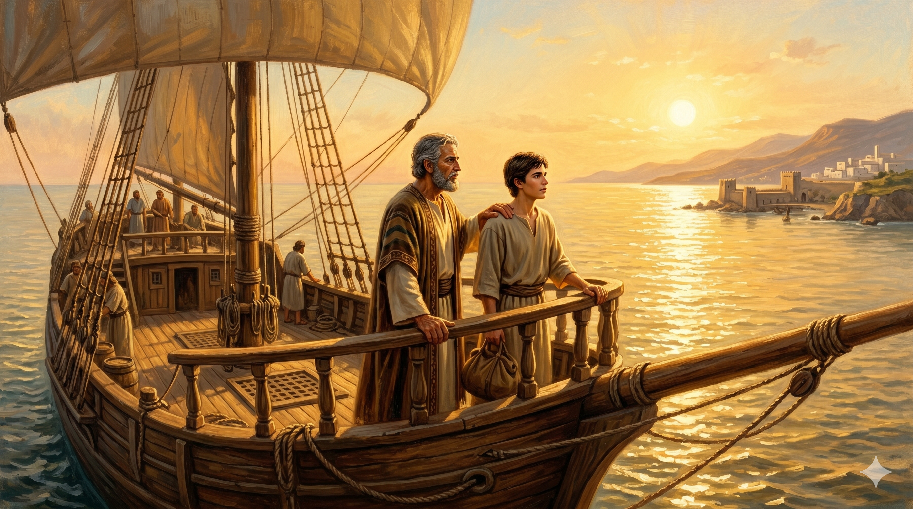

바나바와 바울이 마가 문제로 서로 다른 방향을 향해 걸어가는 이별의 장면 — 안디옥의 항구 길에서 두 사람이 각자의 동역자와 함께 다른 길로 떠나는 결별의 순간
"바나바는 마가라 하는 요한도 데리고 가고자 하나 바울은 밤빌리아에서 자기들을 떠나 함께 일하러 가지 아니한 자를 데리고 가는 것이 옳지 않다 하여 서로 심히 다투어 피차 갈라서니 바나바는 마가를 데리고 배 타고 구브로로 가고 바울은 실라를 택한 후에 형제들에게 하나님의 은혜에 부탁함을 받고 떠나 수리아와 길리기아로 다녀가며 교회들을 견고하게 하니라" — 사도행전 15:37-41
예루살렘 공의회를 마치고 안디옥으로 돌아온 바나바와 바울에게 또 다른 분쟁이 찾아왔습니다. 2차 선교여행을 계획하던 중 마가 요한을 다시 데려갈지가 논쟁의 핵심이 되었습니다. 마가는 1차 여행 중 밤빌리아에서 도중에 돌아간 전력이 있었습니다(행 13:13). 바울의 입장에서 그것은 신뢰할 수 없는 전례였습니다. 그러나 바나바는 달랐습니다. 바나바는 마가에게 두 번째 기회가 필요하다고 보았습니다. 한 번의 실패가 그 사람의 전부가 아니라는 것, 그것이 바나바의 시선이었습니다.
두 사람은 "심히 다투어 피차 갈라섰습니다." 성경은 이 충돌을 솔직하게 기록합니다. 위대한 두 선교사도 의견이 맞지 않았고, 결국 헤어졌습니다. 바나바는 마가를 데리고 구브로로, 바울은 실라와 함께 수리아와 길리기아로 떠났습니다. 이 결별은 표면적으로 손해처럼 보일 수 있습니다. 그러나 하나님의 섭리 안에서 이것은 두 팀이 두 곳을 동시에 섬기는 더 넓은 선교의 시작이었습니다. 그리고 바나바가 끝까지 붙들었던 마가는 후에 바울에게도 "나에게 유익한 자"(딤후 4:11)로 인정받게 됩니다.

바나바와 함께 구브로를 향해 배에 오르는 마가 요한 — 한 번 실패했지만 다시 기회를 얻어 복음의 사역으로 돌아오는 회복의 출발점
바나바는 마가를 포기하지 않았습니다. 바나바가 없었다면 마가복음도 없었을지 모릅니다. 오늘날 교회와 가정과 직장에서 우리 주변에는 한 번 실패하고 포기당한 사람들이 있습니다. 바나바처럼, 그들에게 두 번째 기회를 주는 사람이 있어야 합니다. 누군가의 잠재력을 알아보고, 그 가능성을 믿어 주는 것 — 그것이 위로의 아들이 세상에 남긴 가장 큰 유산입니다. 오늘 당신 주변에서 두 번째 기회를 기다리는 사람은 누구입니까?
바나바와 바울의 갈라섬은 인간적으로 보면 아픈 사건입니다. 그러나 하나님은 그 갈라섬도 사용하셨습니다. 우리 삶의 갈등과 결별도 때로는 하나님의 더 넓은 계획의 일부일 수 있습니다. 지금 겪고 있는 관계의 어려움을 '실패'로만 보지 마십시오. 하나님이 그 빈자리에서 새로운 사람을 붙여 주시고, 더 넓은 길로 인도하실 수 있습니다. 바나바처럼 주어진 길에서 최선을 다하십시오.
바나바가 붙들었던 마가는 훗날 복음서를 기록했습니다.
한 번의 실패가 그 사람의 전부가 아닙니다.
오늘 당신 곁에서 두 번째 기회를 기다리는 사람을 붙드십시오.